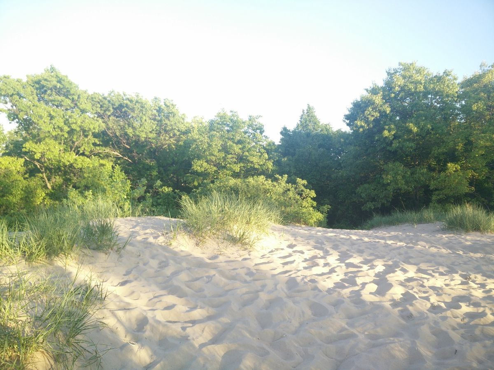
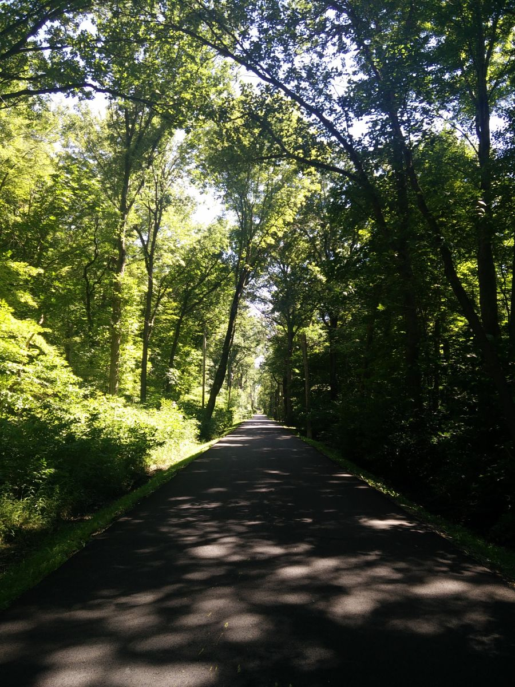

Indiana Dunes is a beautiful place. It has a park within the forest and places to have cookouts. Some of the trails can be really hard since the sand makes it harder to walk.
However, getting to the beach after finishing the trail makes it worth it.
You can relax in the water after adventuring in the woods.

The views at the top of the dunes are amazing. You get to see how big the surrounding forest is and how close you are to the beach.

Indiana Dunes is a big national park. Even just getting from one camp site to the other takes a while when walking.
There are many trails inside Indiana Dunes. It is easy to get lost if you are not following the trails and signs.
Starved Rock
Starved Rock is a must visit if you are in Illinois. It is bigger than Indiana Dunes and it has many beautiful areas.
The canyon water makes paths through the rocks.
Climbing to the top of the mountains gives you a nice view of the lake and dam.
There are canyons of different sices at Starved Rock. This is one of the smaller ones.
This one is one of the bigger canyons. The falling water is very refreshing, specially in a sunny day.
The lake looks beautiful during certain times of the day, evening being one of them.